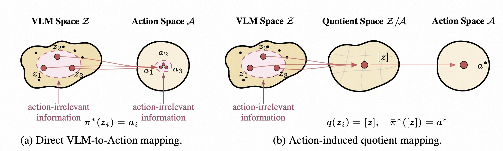
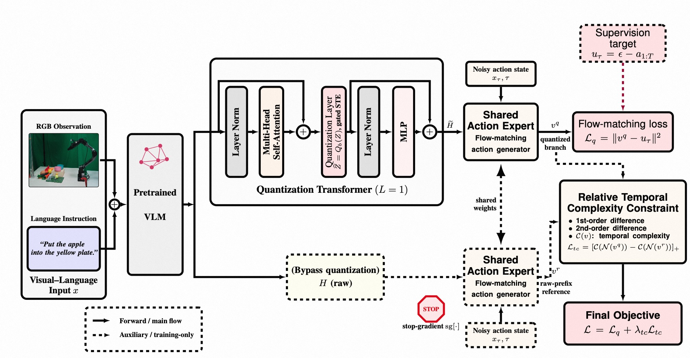
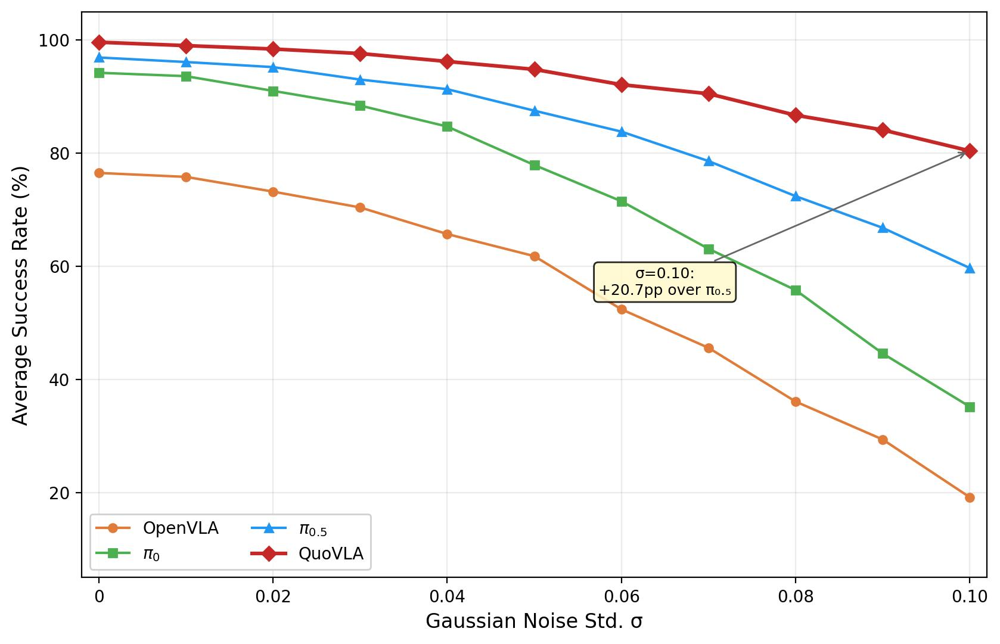
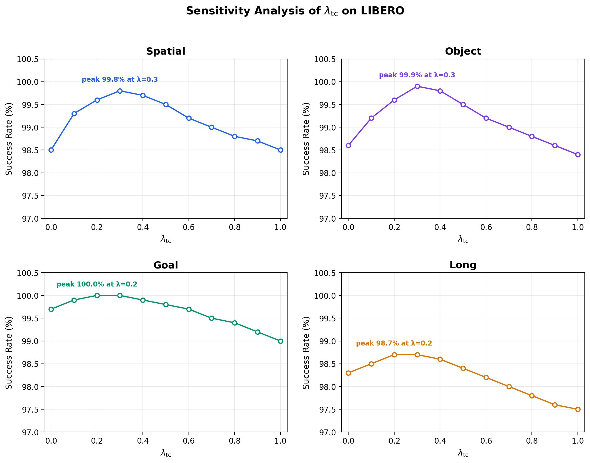

QuoVLA: Quotient Space for Vision-Language-Action Models
论文信息 - 作者：Xuan Wang, Yinan Wu, Haoran Duan, Jungong Han（corresponding author） - 单位：Department of Automation, Tsinghua University - 投稿方向：NeurIPS 2026（投稿中） - arXiv ID：2605.24890 - 代码：待公开
一、核心问题
当前 VLA（Vision-Language-Action）模型的主流范式是将预训练 VLM（Vision-Language Model）的 latent 表征直接接入 action head 生成机器人动作。现有方法普遍采用 "动作信息不足"（action-insufficiency） 的诊断：认为预训练 VLM 的 latent 缺少足够的动作相关信息，因此需要进一步微调 VLM，或将 action 学习信号与 VLM 隔离以防干扰。
本文提出了一个截然相反的诊断：
预训练 VLM 的 latent 不是"信息不足"，而是"信息过度"（overcomplete）——它包含了对 prompt 完全但对控制冗余的信息。VLM 保留了与动作无关的 prompt 层面变化（如光照、背景纹理、语言措辞差异），这些变化经 Transformer 的 injectivity（单射性）传播到 action space，导致策略对不同但行为等价（action-equivalent）的输入产生不同的动作预测，从而损害泛化能力。
核心直觉：两个看起来不同的场景（不同光照、不同背景）如果需要完全相同的操作动作，那么 VLA 应该将它们映射到同一个表示——而不是为每个细微的视觉差异生成不同的 latent。
二、核心思路 / 方法
2.1 Quotient Theory for VLA（商空间理论）
论文建立了 VLA 表征学习的商空间理论框架：
- 定义 action equivalence relation $\sim_{\mathcal{A}}$：两个 VLM latent $h, h'$ 等价，当且仅当它们诱导的 Bayes-optimal action trajectory law 相同：
-
Theorem 1（Minimal VLM-Action Quotient）：商映射 $q_{\mathcal{A}}^\star(h) = [h]_{\sim_{\mathcal{A}}}$ 是 exact action-sufficient 的最粗（coarsest）表示——它保留了改变最优动作行为的所有信息，同时丢弃了一切与动作无关的变化。
-
Theorem 2（Generalization Bound）：商表示 $\mathcal{R}_Q$ 的泛化界不大于原始 VLM 表示 $\mathcal{R}_H$ 的泛化界，且在商映射真正移除了非平凡的动作无关方向时严格更优：
这意味着追求 action-minimal 的表示不仅有理论美感，还有可证明的泛化收益。

图1：Direct VLM-to-Action mapping vs Action-induced quotient mapping。(a) Transformer 的单射性（injectivity）使得预训练 VLM latent 保留了与动作无关的 prompt 层面细节（粉色虚线区域），这些细节未经商空间处理时会直接传播到 action space，导致虚假的动作差异和更差的泛化。(b) 通过 action-induced quotient，与动作无关的变化在解码为共享商编码 $[z]$ 之前被折叠（collapsed），随后统一解码为最优动作 $a^*$。商空间中被网格线（cell decomposition）划分的每个单元格代表一组行为等价的 VLM latent。
2.2 QuoVLA 架构
QuoVLA 基于 $\pi_{0.5}$（PaliGemma-2.6B VLM + 300M flow-matching action expert），在 VLM 和 action expert 之间插入三个关键设计：

图2：QuoVLA 架构总览。左侧为 Visual-Language 输入（RGB 观测 + 语言指令），经 Pretrained VLM 编码为 prefix tokens $H$。中间上方为 Quantization Transformer（L=1），其核心是插入在 Attention 与 MLP 之间的量化层（Quantization Layer），输出压缩后的商编码 $\widetilde{H}$。下方为 Bypass 分支，原始 prefix $H$ 经 stop-gradient 后作为参考。右侧为共享权重的 Flow-matching Action Expert，量化分支预测速度场 $v^q$（实线），参考分支预测 $v^r$（虚线，仅训练时使用）。最终损失由 Flow-matching loss $\mathcal{L}_q$ 和 Relative Temporal-Complexity Constraint $\mathcal{L}_{tc}$ 组成。
（1）Transformer-based Prefix Quantization
在 VLM 的 prefix tokens $H = [h_1, ..., h_M] \in \mathbb{R}^{M \times d}$ 之后，插入一个仅 1 层的量化 Transformer block。关键是 quantization layer 被放在 Attention 子层和 MLP 子层之间（非标准位置）：
其中 $Q_b$ 是 8-bit per-token 对称均匀量化：
（2）Adaptive Straight-Through Estimator（STE）
量化操作 $\text{round}(\cdot)$ 的导数几乎处处为 0，传统 STE 直接传梯度可能导致 VLM 受到过多 action 监督的干扰。QuoVLA 引入可学习的门控参数 $\alpha$：
前向传播：$\widehat{H} = Q_b(H^{\text{att}})$（标准量化）。反向传播：$\frac{\partial \widehat{H}}{\partial H^{\text{att}}} \approx gI$（缩放的恒等梯度）。这个设计让模型学习向 VLM 回传多少 action 梯度。
（3）Dual-Branch Action Generation
- 量化分支（主训练分支）：$v^q = G_\phi^{\text{act}}(x_\tau, \tau \mid \widetilde{H})$，受 $\mathcal{L}_q = \|v^q - u_\tau\|_2^2$ 监督
- 非量化分支（参考分支）：$v^r = \text{sg}[G_\phi^{\text{act}}(x_\tau, \tau \mid H)]$，stop-gradient，仅为量化分支提供参考
两个分支共享 action expert 权重，但量化分支通过压缩后的商表示预测动作，参考分支通过原始 VLM latent 预测动作。
（4）Relative Temporal-Complexity Constraint
为防止量化导致过度高频的动作速度场，引入相对时间复杂度约束：
一阶项惩罚相邻速度步之间的快速变化，二阶项惩罚尖锐曲率和高频振荡。$[\cdot]_+$ 确保只有当量化分支的速度场比参考分支更复杂时才施加惩罚。
最终目标函数：$\mathcal{L} = \mathcal{L}_q + \lambda_{\text{tc}} \mathcal{L}_{\text{tc}}$
三、训练目标
3.1 Flow Matching 基础
对 ground-truth 动作轨迹 $a_{1:T}$，采样噪声 $\epsilon$ 和时间 $\tau$：
目标：学习速度场 $v$ 使 $\|v - u_\tau\|^2$ 最小化。
3.2 总损失
四、实验与结果
4.1 仿真 Benchmark
QuoVLA 在四个仿真 benchmark 上评估：LIBERO、LIBERO-PRO、LIBERO-Plus、RoboTwin 2.0。
LIBERO（标准语言条件操控）
Table (a)：LIBERO 成功率（%）
| Model | Spatial | Object | Goal | Long | Avg |
|---|---|---|---|---|---|
| Diffusion Policy | 78.5 | 87.5 | 73.5 | 64.8 | 76.1 |
| OpenVLA | 84.7 | 88.4 | 79.2 | 53.7 | 76.5 |
| CoT-VLA | 87.5 | 91.6 | 87.6 | 69.0 | 83.9 |
| UniVLA | 96.5 | 96.8 | 95.6 | 92.0 | 95.2 |
| OpenVLA-OFT | 97.6 | 98.4 | 97.9 | 94.5 | 97.1 |
| π₀ | 96.8 | 98.8 | 95.8 | 85.2 | 94.2 |
| π₀.₅ | 98.8 | 98.2 | 98.0 | 92.4 | 96.9 |
| ABot-M0 | 98.8 | 99.8 | 99.0 | 96.6 | 98.6 |
| SimVLA | 99.6 | 99.8 | 98.6 | 96.4 | 98.6 |
| QuoVLA | 99.8 | 99.9 | 100.0 | 98.7 | 99.6 |
解读：QuoVLA 在全部四个 suite 上取得最优，平均 99.6%，比第二名（SimVLA/ABot-M0 的 98.6%）高出 1.0 个百分点。收益在 Long（长时序任务，+1.1%）和 Goal（目标条件任务，+1.0%）上最明显——这些更困难的任务对"去除动作无关信息"的需求更大。
LIBERO-PRO（泛化鲁棒性）
Table (b)：LIBERO-PRO 鲁棒性成功率（%），仅摘录关键对比
LIBERO-PRO 测试 Object/Position/Semantic/Task 四种扰动下的泛化能力：
| Suite | Model | Ori | Obj | Pos | Sem | Task |
|---|---|---|---|---|---|---|
| Spatial | π₀.₅ | 98.0 | 97.0 | 20.0 | 97.0 | 1.0 |
| Spatial | QuoVLA | 100.0 | 99.0 | 40.0 | 99.0 | 10.0 |
| Object | π₀.₅ | 98.0 | 98.0 | 17.0 | 96.0 | 1.0 |
| Object | QuoVLA | 100.0 | 87.0 | 26.0 | 100.0 | 26.0 |
| Goal | π₀.₅ | 97.0 | 97.0 | 38.0 | 97.0 | 0.0 |
| Goal | QuoVLA | 100.0 | 85.0 | 57.0 | 100.0 | 42.0 |
| Long | π₀.₅ | 93.0 | 92.0 | 8.0 | 93.0 | 1.0 |
| Long | QuoVLA | 99.0 | 82.0 | 21.0 | 99.0 | 24.0 |
解读：
- 在 20 个 LIBERO-PRO 鲁棒性设置中，QuoVLA 在 17 个设置上取得最优或并列最优
- Position 扰动（位置变化） 提升最为显著：Spatial +20%、Object +9%、Goal +19%、Long +13%
- Task 扰动（任务逻辑变化） 同样大幅领先：Spatial +9%、Object +25%→22pp、Goal +42%、Long +23%
- Object 扰动（物体变化） 相对较弱——因为改变任务相关物体会改变 object-action 对应关系本身，商空间的 action-invariant 压缩可能抑制了部分精细的物体定位线索
- Position 和 Task 扰动恰好是"需要动作层面推理而非简单视觉匹配"的场景，验证了商空间设计的核心 motivation
LIBERO-Plus（细粒度鲁棒性，7 种扰动）
| Models | Camera | Robot | Lang | Light | Bkgd | Noise | Layout | Avg |
|---|---|---|---|---|---|---|---|---|
| Zero-Shot Transfer | ||||||||
| π₀.₅ | 75.8 | 79.4 | 83.3 | 95.5 | 95.0 | 89.6 | 87.0 | 85.7 |
| ACoT-VLA | 72.6 | 82.6 | 87.5 | 97.7 | 96.5 | 87.8 | 88.1 | 86.6 |
| QuoVLA | 82.3 | 87.6 | 88.2 | 98.2 | 95.9 | 90.8 | 89.3 | 90.3 |
| Supervised Fine-Tuning | ||||||||
| π₀.₅ | 70.3 | 41.7 | 81.1 | 97.3 | 94.6 | 71.8 | 84.9 | 75.7 |
| ACoT-VLA | 96.6 | 70.4 | 79.7 | 95.1 | 97.1 | 95.9 | 85.0 | 88.0 |
| QuoVLA | 98.4 | 73.5 | 83.7 | 96.3 | 99.0 | 94.8 | 90.4 | 90.9 |
解读：
- Zero-shot：QuoVLA 平均 90.3%，比 π₀.₅（85.7%）高 4.6 个百分点。Camera 和 Robot 扰动提升最明显（+6.5% 和 +8.2%），这些正是商空间压缩最擅长的"prompt-level 变化"
- Fine-tuning：平均 90.9%，比 ACoT-VLA（88.0%）高 2.9 个百分点。Camera 达到 98.4%，Background 达到 99.0%
RoboTwin 2.0（双臂操控，完整 51 任务）
| Model | Easy Avg | Hard Avg |
|---|---|---|
| ACT | 29.7% | 1.7% |
| π₀ | 46.4% | 16.3% |
| π₀.₅ | 42.98% | 43.84% |
| DP3 | 55.2% | 5.0% |
| QuoVLA | 45.1% | 58.6% |
解读：
- Hard 设置：QuoVLA 的 58.6% 远超 π₀.₅ 的 43.84%（+14.76pp）和所有其他方法。DP3 在 Easy 上最强（55.2%）但在 Hard 上崩溃到 5.0%，说明其缺乏分布偏移下的鲁棒性
- Easy 设置：QuoVLA 的 45.1% 虽然低于 DP3（55.2%），但与其他 VLA 方法相当。Easy-Hard 的表现"反转"说明两个 split 的任务构成和扰动 profile 不同，商空间 bottleneck 在过滤动作无关因素方面有独特优势
4.2 真机实验
Table：真机操控成功率（100 次试验/任务，5000 步训练）
| Task | π₀.₅ | QuoVLA | Δ |
|---|---|---|---|
| Move tennis ball (yellow→blue plate) | 93% | 97% | +4% |
| Pick red cube into yellow plate | 48% | 74% | +26% |
| Put apple on yellow plate | 31% | 83% | +52% |
| Remove cuboid from blue plate | 86% | 98% | +12% |
| Average | 64.5% | 88% | +23.5% |
解读：在仅 100 个训练样本的低数据条件下，QuoVLA 平均提升 23.5 个百分点。"Put apple on yellow plate"（+52%）和"Pick red cube into yellow plate"（+26%）这类精确放置任务提升最显著——因为商空间压缩过滤了与动作无关的视觉变化，让策略更聚焦于任务相关的空间关系而非 prompt 层面的细节。
4.3 消融实验
Table：LIBERO 消融（默认设置：$L_q=1, b_q=8$，Adaptive STE，dual-branch + constraints）
| Knob | Value | Spatial | Object | Goal | Long | Avg |
|---|---|---|---|---|---|---|
| QuoVLA（默认） | — | 99.8 | 99.9 | 100.0 | 98.7 | 99.6 |
| w/o Quantization | — | 98.8 | 98.2 | 98.0 | 92.4 | 96.85 |
| Quantization depth $L_q$ | 2 | 96.4 | 96.1 | 95.6 | 94.8 | 95.7 |
| Quantization depth $L_q$ | 6 | 93.7 | 92.9 | 91.8 | 90.5 | 92.2 |
| Quantization bit-width $b_q$ | 4 | 84.4 | 87.3 | 85.0 | 73.7 | 82.6 |
| Quantization bit-width $b_q$ | 16 | 98.3 | 98.8 | 97.2 | 94.1 | 97.1 |
| w/o Adaptive STE | — | 98.4 | 98.5 | 99.1 | 97.8 | 98.45 |
| w/o dual-branch | — | 98.4 | 98.6 | 99.2 | 98.4 | 98.65 |
| w/o Constraints | — | 98.5 | 98.6 | 99.7 | 98.3 | 98.78 |
解读（逐项分析）：
- 移除量化 → 96.85%（-2.75%）：直接退化为接近 π₀.₅（96.9%），验证了量化 bottleneck 是核心贡献
- 增加量化深度 $L_q$：1→2→6 层，性能单调下降（99.6% → 95.7% → 92.2%）。更多层会过度处理 prefix，扭曲动作相关结构
- 量化位宽 $b_q$：4-bit 严重不足（82.6%），8-bit 最优（99.6%），16-bit 反而下降（97.1%）——因为位宽过大削弱了"商压缩"效果，保留了过多动作无关信息
- 移除 Adaptive STE → 98.45%（-1.15%）：验证了门控梯度估计对离散 bottleneck 稳定训练的重要性
- 移除 dual-branch → 98.65%（-0.95%）：缺少参考分支的引导
- 移除 Constraints → 98.78%（-0.82%）：缺少时间平滑正则
4.4 噪声鲁棒性曲线

图X：噪声鲁棒性曲线（根据论文 Figure 3b 数据重现）。横轴为添加到 RGB 观测的高斯噪声标准差 σ（0 到 0.10），纵轴为 LIBERO 四 suite 平均成功率（%）。σ 越大表示视觉退化越严重。
解读：四条曲线展示了四种方法在递增噪声下的表现——OpenVLA 最脆弱（σ=0.10 时降至 19.2%），π₀ 和 π₀.₅ 有一定鲁棒性但仍大幅下降（分别降至 35.2% 和 59.7%），QuoVLA 全程维持最高曲线且退化最慢（σ=0.10 时仍保持 80.4%）。在 σ=0.08 时，QuoVLA 领先 π₀.₅ 约 14.3 个百分点；在 σ=0.10 时领先扩大到 20.7 个百分点。商空间压缩通过量化 bottleneck 抑制了与任务无关的视觉扰动，使 action head 接收到的商表示对观测噪声天然不敏感。
4.5 时间复杂度权重灵敏度

图X：λ_tc 灵敏度分析（根据论文附录 Figure 数据重现）。在 LIBERO 四 suite 上测试 λ_tc 从 0 到 1.0 对成功率的影响。每个子图标注了峰值成功率及对应的 λ_tc 值。
解读：性能在 $\lambda_{\text{tc}} \in [0.1, 0.5]$ 范围内非常稳定——Spatial/Object 在 λ=0.3 达到峰值（99.8%/99.9%），Goal 在 λ=0.2-0.3 达到 100.0%，Long 在 λ=0.2-0.3 达到 98.7%。λ=0（无约束）时有轻微下降，λ≥0.8 时过度正则化带来小幅退降。这说明相对时间复杂度约束是一个稳健的正则化器，不依赖精细的超参调优。
五、关键洞察与技术亮点
5.1 理论贡献
- 重新定义 VLA 适配问题：首次提出从"给 VLM 加动作信息"到"从 VLM 中去动作冗余信息"的范式转变。这是一个根本性的观点变化。
- 可证明的泛化收益：Theorem 2 将商空间的压缩与 certified generalization bound 联系起来，不是单纯的 heuristic。
- Transformer Injectivity 的创造性应用：引用 Nikolaou et al. (2026) 的结果说明 Transformer 的单射性（不同输入→不同 latent）在 VLA 场景下反而是有害的——因为它会将 prompt 层面的细微差异传播到 action space。
5.2 工程贡献
- 量化位置的选择：把量化层放在 Attention 和 MLP 之间（而非之后），让离散化发生在中间激活上。消融显示 1 层量化 Transformer 最优——"less is more"。
- Adaptive STE：用可学习的门控参数控制向 VLM 回传的梯度强度。这是一个优雅的解决方案，同时避免了过度干扰 VLM 预训练知识和梯度消失。
- Relative（相对）时间约束而非 Absolute（绝对）：$\mathcal{L}_{\text{tc}}$ 只在量化分支比参考分支更复杂时才惩罚——这保证了压缩不会牺牲必要的时序结构。
5.3 实验洞察
- 8-bit 量化是甜蜜点：4-bit 信息不足，16-bit 压缩不够，8-bit 恰好提供了合适的 bottleneck 强度。
- 低数据真机场景收益最大：+52%（put apple）和 +26%（pick cube）表明商空间压缩在数据稀缺时特别有效——因为它通过先验（"忽略动作无关变化"）弥补了数据不足。
- Position/Task 扰动 → 最大提升：因为这些扰动要求"动作层面的推理"，商空间天然适合处理这类场景。Object 扰动较弱是因为改变物体会改变动作语义本身。
六、局限性
- 依赖强 VLM 基座：如果预训练 VLM 在前缀表征中缺乏动作相关信息，商空间压缩无法弥补缺失。QuoVLA 适合已有较强 VLM 的场景。
- 量化 bottleneck 容量敏感：depth 和 bit-width 需要合理选择（L=1, b=8 最优），不恰当的设置会损害动作结构。
- 真机实验范围有限：仅桌面操控 + 单一硬件设置，未涉及移动操控、更长时序或开放世界任务。
- Object 扰动下表现相对较弱：商空间的 action-invariant 设计可能过度压缩了与特定物体相关的精细定位信息。
七、关键概念速查
| 概念 | 解释 |
|---|---|
| Action-insufficiency view | 现有主流观点：预训练 VLM latent 缺少动作相关信息，需要进一步微调或添加 action head |
| Action-sufficiency / overcompleteness | 本文观点：VLM latent 已包含动作信息，但同时携带了大量与动作无关的 prompt 层面变化 |
| Action equivalence $\sim_{\mathcal{A}}$ | 两个 VLM latent 等价当且仅当它们诱导相同的 Bayes-optimal action trajectory law |
| Minimal VLM-Action Quotient | 商空间 $\mathcal{H}/\sim_{\mathcal{A}}$，保留动作相关信息，丢弃动作冗余信息的最粗表示 |
| Prefix Quantization | 在 VLM prefix tokens 和 action expert 之间插入 8-bit 量化 Transformer block（L=1） |
| Adaptive STE | 可学习门控参数 $g \in [g_{\min}, 1]$ 控制通过量化的梯度强度 |
| Dual-Branch Action Generation | 量化分支（主训练）+ 非量化分支（stop-gradient 参考），共享 action expert 权重 |
| Relative Temporal-Complexity Constraint | $\mathcal{L}_{\text{tc}} = [\mathcal{C}(v^q) - \mathcal{C}(v^r)]_+$，一阶+二阶差分约束，只在量化分支更复杂时惩罚 |
| Flow Matching | 通过学习速度场 $v$ 匹配 $u_\tau = \epsilon - a_{1:T}$ 来生成动作轨迹 |
| Transformer Injectivity | Transformer 的单射性质：不同输入映射到不同 latent，在 VLA 中可能将动作无关变化传播到 action space |